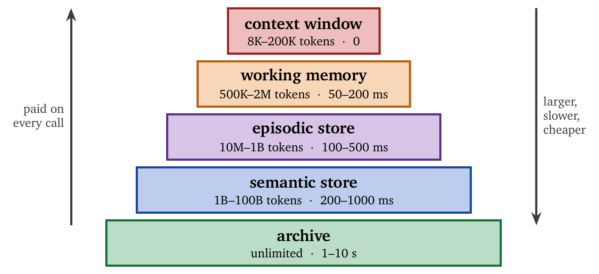
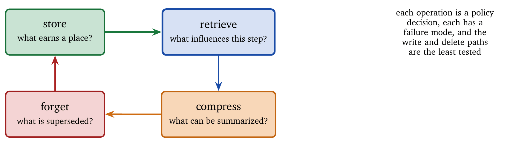
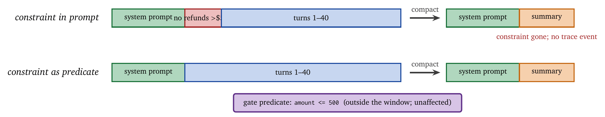

« Risk-Aware Gates: Verification, Abstention, Refusal | Contents | Retrieval and Evidence Management »
Part II: Control and CommitmentChapter 10. Memory, State, and Forgetting
Memory is what makes an agent an agent, and it is also how an agent’s mistakes become permanent.
A system that forgets everything between responses is a function. It cannot learn a user’s preferences, cannot build on yesterday’s findings, and cannot notice that it has tried the same approach twice. Add memory and it can do all three. Add memory and one hallucinated fact, written once, is retrieved with confidence in every session that follows.
That symmetry is the theme of this chapter. Memory amplifies whatever is put into it. Competence compounds, and so do errors, through identical mechanisms; a memory system cannot tell which it is propagating. The interesting work is therefore governance rather than storage. Storage is solved. What remains is deciding what earns a place in memory, where it lives, when it is retrieved, when it is superseded, and when it is deleted. Each of these is a policy decision with a failure mode, and the chapter is organized around them.
The framing throughout is architectural: context windows behave like a cache, token costs like memory bandwidth, retrieval latency like a miss penalty. The analogy is productive as long as one remembers where it breaks. A CPU’s cache controller cannot write a false entry that the CPU then believes.
10.1 The Memory Hierarchy
Computer systems organize memory hierarchically: registers, L1 cache, L2 cache, main memory, SSD, disk. Each level is larger, slower, and cheaper per bit than the one above, and the arrangement works because most accesses hit the fast levels while the slow levels provide capacity. Agents face an analogous trade-off with one important difference: the agent itself participates in memory management. Where a CPU relies on a hardware cache controller, an agent decides placement through learned heuristics, explicit rules, or tool-mediated control, which makes memory both a capability and a source of failure.
10.1.1 Agent Memory Tiers
Agent memory organizes into five tiers, shown in Figure 10.1.

The context window holds what is immediately available for inference, and every token in it is processed on every forward pass. Context is therefore active compute input, which has a billing consequence: a token added to context is paid for on this call and on every subsequent call that carries it. Storage is a one-time charge; context is a subscription. Like an L1 cache, context is instantaneous and its capacity is constrained by both architecture and economics; a larger window increases expressivity while degrading the signal-to-noise ratio and inflating compute cost.
Working memory holds session state that does not fit in context and is still hot: expanded conversation history, intermediate reasoning artifacts, retrieved documents awaiting synthesis. Access requires explicit retrieval and remains fast. This tier absorbs bursty state without polluting the inference path.
Episodic memory stores interaction traces, ordered sequences of observations, actions, and outcomes. It is append-heavy, indexed by time, and optimized for recall rather than inference. It supports debugging, audit, and learning, and it is rarely injected wholesale into context.
Semantic memory stores abstractions: facts, preferences, rules, and associations derived from experience. It is queried by meaning rather than by time, typically through a vector database or a knowledge graph. It is slower to access and amortizes its value across many sessions.
Archival memory holds cold data: old conversations, expired tasks, historical logs. Its role is preservation. Retrieval is rare and expensive, and retention is effectively unlimited.
Tier separation is mandatory. Systems that collapse episodic, semantic, and working memory into a single store suffer retrieval noise and uncontrolled growth. Separating the tiers allows different retention policies, indexing strategies, and safety controls to apply to different kinds of information.
10.1.2 Token Bandwidth: The Memory-Bus Analogy
As memory bandwidth limits data movement in a computer, token bandwidth limits information flow in an agent. Every token retrieved from external memory consumes context capacity and inference cost. The effective bandwidth is \[B_{\text{token}} = \frac{\text{tokens retrievable per call}}{\text{latency} + \text{inference time}},\] which makes a point worth stating: retrieval latency and inference cost are coupled. Increasing the context size reduces retrieval latency by reducing misses, and increases inference time through attention cost.
Context windows have grown dramatically: GPT-4 supports 128K tokens, Claude 200K, Gemini 1.5 Pro 1M, and Llama 4 reaches 10M [2]. Larger windows shift the bandwidth problem rather than removing it; the bottleneck moves from retrieval latency to attention cost and model utilization. The principle is therefore to minimize the tokens in context while maximizing their information density, which is the principle behind cache-aware programming: keep the working set small, hot, and relevant. A 100K-token context filled with loosely related text is worse than a 4K-token context containing only task-relevant constraints, because models attend unevenly and irrelevant tokens dilute attention.
10.1.3 Cache Miss Penalty
When needed information is absent from context, the agent must retrieve it. The retrieval has latency, the cache-miss penalty, and it may fail. The expected cost of a memory access is \[\mathbb{E}[\text{cost}] = h \cdot c_{\text{hit}} + (1-h)(c_{\text{miss}} + c_{\text{retrieve}}),\] where \(h\) is the hit rate, \(c_{\text{hit}}\) the in-context access cost (dominated by the marginal token cost), \(c_{\text{miss}}\) the stall penalty, and \(c_{\text{retrieve}}\) the cost of the retrieval computation. Optimizing memory therefore means maximizing \(h\) for the information that matters, and not maximizing the cache size, since increasing context increases \(c_{\text{hit}}\) as well as \(h\). This is why naive retrieval-augmented generation underperforms: retrieving large chunks to avoid misses raises the hit rate and explodes \(c_{\text{hit}}\), and systems that retrieve aggressively often pay more in inference than they save in retrieval.
10.1.4 The Lost-in-the-Middle Problem
Large context windows introduce a counterintuitive failure. Models struggle to use information located in the middle of a long context [8]: performance is highest when the relevant information appears near the beginning or the end, and information buried in the middle is often ignored. “It fits in context” therefore does not imply “the model will use it.” Ordering is a first-class design decision, on a par with selection. Important constraints belong early (system instructions) or late (immediately before the question), and long retrieved documents should be summarized or segmented so that critical details do not vanish into the middle. A constraint placed in the middle of eighty thousand tokens has been written down without being said.
10.2 Virtual Context Management
The context window is finite; the information an agent might need is not. Virtual context management bridges the gap by creating the appearance of unlimited memory through paging, compression, and retrieval. Unlike static prompt construction, it treats context as a dynamic resource that changes over time, and the agent itself participates in deciding what stays resident and what is evicted.
10.2.1 The MemGPT Architecture
MemGPT [11] introduced the operating-system analogy explicitly: treat the context window as RAM and external storage as disk, and let the model manage memory through function calls that page data in and out. This is a conceptual shift. Instead of the developer deciding memory policy entirely outside the model, the model reasons about its own memory footprint.
The architecture has three components. The main context is the fixed-size prompt visible to the model during inference, partitioned into static system instructions, a dynamic working scratchpad, and a first-in-first-out message buffer of recent conversation. Recall storage is a searchable database containing the complete conversation history, accessed through paginated search, which provides literal recall of past interactions. Archival storage is a vector database for long-term knowledge, accessed by semantic search, which stores abstracted facts.
The key mechanism is self-editing memory. When the message buffer exceeds capacity, the system summarizes older content, evicts it to recall storage, and continues; later, the model can retrieve that content if needed. Empirically, MemGPT agents maintain coherence across conversations that far exceed the context limit, outperforming baselines with fixed summarization. Self-editing matters because a fixed summarization policy assumes the developer knows in advance what will matter later; self-editing allows the agent to adapt its memory strategy to the task, the user, and observed failures.
10.2.2 Memory Blocks
The Letta framework [7] refines MemGPT with structured memory blocks: discrete, labeled regions of context with defined purposes.
| Block | Purpose | Character limit |
|---|---|---|
persona |
Agent self-concept, capabilities | 2000 |
human |
User information, preferences | 2000 |
scratchpad |
Working notes, reasoning | 4000 |
task |
Current task state | 2000 |
Memory blocks impose structure on context. Instead of a flat prompt, the agent reasons over named regions with specific semantics, which mirrors how programmers separate stack, heap, and globals. The benefits are practical: updates are localized, which reduces accidental overwrites; capacity limits prevent silent growth; and retrieval targets specific blocks instead of entire histories.
10.2.3 Heartbeat Mechanism
Multi-step reasoning requires the agent to act several times before producing a user-visible response. MemGPT implements this with heartbeats: after emitting a tool call, the agent can request continuation by setting request_heartbeat=true, which enables sequences such as retrieve memory, update a block, retrieve again, reason, respond. Without heartbeats, such workflows would require explicit user turns or brittle chaining logic. Heartbeats turn inference into a control loop: the agent alternates between reasoning and memory operations until it converges, which is closer to an interpreter loop than to a single function call and is essential for long-horizon tasks.
10.3 Memory Operations
Memory is an active subsystem that runs for as long as the agent lives. Every interaction can trigger a write, a read, an update, a compression, or a deletion, and each consumes resources and has its own way of going wrong. Treating memory as a repository that sits still between queries is the mental model that produces untested write paths. It is more useful to treat memory operations as first-class system calls, since poorly designed ones dominate latency, inflate cost, and quietly degrade correctness. Figure 10.2 shows the lifecycle.

10.3.1 Storage: What to Remember
Storing everything is the fastest way to poison retrieval. The storage decision trades future utility against present and ongoing cost: store when the expected future value exceeds \(c_{\text{store}} + c_{\text{maintain}}\). The difficulty lies in estimating future value. Most conversational turns are transient (greetings, acknowledgments, clarifications), and persisting them adds noise and little utility.
Mem0 [9] addresses this by separating conversation from memory formation. Instead of summarizing everything, it selectively extracts facts. In the extraction phase, each interaction is scanned for candidate facts: preferences, commitments, stable attributes, project details. The phase is conservative by design, and most turns produce nothing; aggressive extraction overwhelms memory quality. In the update phase, extracted facts are compared against existing memory, and the system decides whether to add new information, update an existing fact, delete a fact that has been contradicted, or ignore a redundant or speculative candidate. This phase is what makes memory dynamic rather than accumulative; facts evolve as the user evolves.
On the LOCOMO benchmark, this selective strategy improves response quality by 26% while reducing token cost by 80–90% compared to naive history retention [9]. The gain came from memory hygiene, deciding what deserved storing and removing what no longer did. Every stored fact enlarges the retrieval search space, noise compounds, and a single incorrect preference can bias dozens of future responses; high-precision storage beats high-recall storage. The graph-based variant Mem0g structures facts relationally, with entities as nodes and relationships as edges, which supports multi-hop queries without inflating context and increases the complexity of the update logic.
10.3.2 Retrieval: Finding Relevant Memory
Retrieval decides which past information influences the present decision, which makes it one of the most safety-critical components of an agent. Two paradigms dominate. Embedding-based retrieval encodes queries and stored items as vectors and returns nearest neighbors; it is fast, scalable, and robust to paraphrase, and blind to time, causality, and explicit structure, since it retrieves what is similar rather than what is correct. Structured retrieval queries explicit fields such as timestamps, entities, and predicates; it is precise and brittle, requiring structured storage and well-formed queries.
Zep [13] combines the two with a temporal knowledge graph. Facts are stored with timestamps and relationships, and retrieval can filter by time, entity, relation, and semantic similarity. The hybrid captures both what happened and what it means, and it supports provenance, since a semantic fact can be traced to the episodes that generated it. Retrieval is a ranking problem rather than a lookup: returning the wrong five memories is worse than returning none, and retrieval must optimize precision under severe context constraints.
10.3.3 Compression: Reducing Memory Footprint
Long-running agents accumulate text rapidly. Tool outputs, logs, intermediate reasoning, and observations dwarf the user’s input, and without compression the context saturates long before useful work is done. All compression is lossy; the question is where loss is acceptable.
Summarization, in hierarchical form [15], replaces detail with abstraction. It scales arbitrarily and introduces semantic drift; once details are summarized away they cannot be recovered. Observation masking exploits the fact that observations dominate token count and are rarely re-used verbatim: it removes raw observations after they have influenced reasoning and retains only actions and conclusions. Acon [1] shows 26–54% memory reduction with minimal performance loss. Prompt compression such as LLMLingua [5] removes redundancy at the token level, preserving semantics at the cost of additional preprocessing. Embedding-based compression such as PCC [12] compresses long contexts into dense vectors used as soft prompts, achieving compression ratios up to \(16\times\) at the cost of interpretability and fine-grained control.
The policy that follows is to compress observations aggressively, compress reasoning cautiously, and preserve raw data in archival storage even when summaries are used in context.
10.3.4 Forgetting: When to Delete
Forgetting is maintenance. A store that only grows becomes unreliable, and the cause is rarely that any single entry is wrong; superseded entries stay retrievable and compete with current ones.
This is measurable, and the measurements are unflattering. Benchmarks that require memory to be updated rather than merely recalled find systems that retrieve well and supersede badly [23]. An architectural study across thirteen memory systems traces the failure to where the model sits relative to the control plane: the operations that mutate memory, supersede, release, and purge, are far less exercised than the retrieval path and correspondingly more broken [20]. Stress-testing confirms a consistent set of failure modes across implementations [22]. The practical reading is that a memory system’s read path is probably fine and its write and delete paths are probably untested. Deletion should be tested the way a database migration is tested.
Four forgetting policies are common. Time-based expiration deletes memories older than a threshold; it is simple and predictable and blind to importance. Access-based eviction, such as least-recently-used, assumes that access correlates with value; it works well for working memory and poorly for rare but critical facts. Contradiction-based deletion lets new information invalidate old facts; Mem0 reasons about contradiction explicitly during updates and prefers replacement to accumulation. Confidence-based pruning removes low-confidence memories first; it requires calibrated confidence, which is difficult to maintain and powerful when available. In every case, a small set of accurate, current memories outperforms a large store polluted with stale or incorrect facts.
10.4 Context Engineering
Context engineering is the discipline of constructing the context window for each inference call. It determines what the model sees and attends to. As Karpathy observes, the context window functions like RAM in an operating system [6]: what does not fit must be paged, summarized, or ignored.
The symptoms of poor context engineering are predictable: overflow truncates critical information, saturation fills the context with irrelevant text, attention dilution hides important constraints, and costs increase without proportional gains. Performance degrades nonlinearly with context length and in position-dependent ways [8]. A larger window raises the ceiling on what can be included and does nothing about what the model will use; context is a curated budget rather than a container.
10.4.1 Context Strategies
Four operations define context control. Write persists information outside the context for later retrieval, reducing immediate load at the cost of a future retrieval. Select retrieves a small, relevant subset of stored information; this is where most retrieval-augmented systems fail, since poor selection pollutes the context. Compress reduces tokens while preserving meaning, through summarization, masking, or token-level compression. Isolate separates contexts by function, so that tool execution, reasoning, and user interaction do not share uncontrolled context. Effective systems combine all four.
10.4.2 Compression Has Side Effects
Compression is the operation teams reach for first, because it visibly reduces the bill. It is also the one with the least-examined consequences, and two recent results should change how it is deployed.
Compression weakens recency. Recurrent context compression measurably reduces the influence of recent interactions on the agent’s behavior [17], which is the reverse of what long-horizon work needs, since the most recent turns usually carry the current sub-goal. The mechanism is that summarization compresses old material into dense, high-salience text, and that dense summary competes with, and often outweighs, the verbose recent turns beside it.
Compression deletes constraints. This is the more serious finding. Context compaction silently removes safety and policy instructions that fall in the summarized region, so a long-running agent can end up operating without the constraints it started under, with nothing in the trace marking the moment they disappeared [21]. Figure 10.3 shows the failure. The agent is not jailbroken and no adversary is involved. A routine memory optimization, running on schedule, removed the sentence that said not to issue refunds above $500, and the agent then behaved exactly as a well-aligned agent would in the absence of that constraint.

Three consequences follow, and they are design rules. First, constraints do not live in the context window: anything that must hold for the whole run belongs in code the compactor cannot reach, in the gate predicates of Chapter 9, evaluated per action and independent of what the prompt currently says; a constraint in a system prompt is a hint with good intentions. Second, compaction is an action: it changes state, it can violate invariants, and it should emit a trace event (Chapter 14) recording what was removed, since “compacted 14 turns” does not answer “did the policy text survive?” Third, compaction needs a post-condition: check the invariants after compacting, as after any state mutation, and re-assert critical instructions into the retained region rather than trusting the summarizer to have judged them important.
Budget-aware context management helps by making retention an explicit allocation against a stated allowance rather than a heuristic trigger [18], and programmatic approaches that keep the context revisable let a bad compaction decision be undone once its cost becomes visible [19, 16]. Neither removes the need for the post-condition.
10.4.3 Hierarchical Context Architecture
Production agents typically implement several context scopes. The system scope holds static instructions and persona, loaded once and rarely modified. The session scope holds conversation state and task progress, updated throughout a session. The turn scope holds the immediate query, retrieved facts, and tool outputs, and is ephemeral by design. This mirrors transaction models in databases: the system scope is committed state, the session scope is transactional, and the turn scope is speculative. Without scope separation, temporary information leaks into long-term memory and long-term constraints clutter short-term reasoning.
10.5 Episodic and Semantic Memory
The distinction between episodic and semantic memory from cognitive psychology maps cleanly onto agent architecture. Episodic memory records sequences of events, preserving order and context; it answers “what did we do?” and “when did this occur?” It is implemented with append-only logs or relational stores (Letta uses PostgreSQL with timestamps and metadata), and it supports continuity, debugging, auditability, and offline learning. Semantic memory stores abstractions: facts, preferences, constraints. It answers “what is true?” independently of time, is implemented with vector databases or knowledge graphs, and generalizes across episodes and persists across sessions.
The two interact. Episodes generate facts; facts influence the interpretation of future episodes; contradictions must be resolved; provenance must be preserved. The design questions are which episodes yield semantic facts, when facts should be updated or revoked, and whether retrieved facts should carry links to their source episodes. Poor handling here produces brittle personalization and hallucinated consistency.
10.6 State Management
Memory content alone is insufficient. Agents must manage memory state: how it is initialized, persisted, synchronized, and kept consistent over time. These concerns are familiar from distributed systems, and agent architectures often rediscover them the hard way.
10.6.1 Initialization
Agents are initialized into memory rather than starting with it, and the initialization choices determine early behavior and long-term stability. A cold start begins with empty memory, which avoids inherited errors and forces the user to re-establish preferences, context, and constraints. A warm start initializes with templates, seed knowledge, or prior states, which improves early usefulness and risks importing irrelevant or incorrect assumptions. A transfer copies memory from a previous agent version or a related agent, which enables continuity across deployments and requires schema compatibility and validation, since malformed or obsolete memory silently degrades behavior. The Letta framework supports explicit memory initialization through declarative configuration, making it reproducible. Initialization is a trust boundary: memory imported at initialization is treated as ground truth, and errors introduced there are rarely corrected organically.
10.6.2 Persistence
Agent memory must survive process restarts, crashes, redeployments, and upgrades. Database backing, relational or document, provides durability, indexing, and transactional semantics and is the standard choice for production agents. File-based persistence is simple and fragile, since concurrency and partial writes introduce corruption. Object storage is highly durable and scalable, with high latency, and suits archival memory rather than active state. Letta persists all memory blocks, episodic history, and archival state in PostgreSQL, which allows agents to resume exactly where they stopped, a property critical for long-running workflows.
10.6.3 Synchronization
When memory is accessed concurrently, by multiple replicas serving the same user, by background processes, or by several agents sharing state, synchronization becomes necessary, and the classical solutions apply: transactions for atomic updates, locks for exclusive access, versioning for optimistic concurrency. Memory updates should follow the same commit discipline as actions (Chapter 8); a speculative memory update that fails validation must be rolled back rather than partially applied.
10.6.4 Consistency Models
Memory systems expose different consistency guarantees. Under strong consistency all reads observe the latest write, which is easy to reason about and expensive to scale. Under eventual consistency writes propagate asynchronously and reads may be briefly stale, which scales well and complicates reasoning. Under session consistency reads within a session see the session’s writes while consistency across sessions is eventual; this is the default for conversational agents and matches user expectations, since what a user just said should be remembered immediately while cross-device synchronization may lag.
10.7 Eviction Is an Online-Algorithms Problem
Memory systems accumulate, so something has to be evicted, and most systems reach for least-recently-used (LRU) or least-frequently-used (LFU) eviction because those are the policies everyone knows.
On semantic workloads they are the wrong policies, and measurably so. Formalizing the agent retrieval buffer as online semantic cache replacement with switching costs, where items match by embedding similarity and hit quality is continuous rather than binary, produces an uncomfortable finding: the classic heuristics consistently underperform plain first-in-first-out eviction, because semantic workloads lack the temporal locality and frequency concentration those heuristics were designed to exploit [29]. A team that reaches for LRU because it is the obvious choice does worse than a team that did the simplest possible thing, and neither will notice without measuring hit quality rather than hit rate. Learning-augmented policies do better than both, which is the expected outcome once the workload has structure that hand-designed heuristics do not encode. Memory eviction is an online-algorithms problem with its own competitive analysis, and it is a design decision rather than a configuration setting.
10.8 Context Assembly as Query Execution
Chapter 5 treated the context window as a budget. A more productive analogy is available. Context assembly decides what enters each prompt, in what order, and when to compact, under a hard window budget and a byte-sensitive prompt cache. That is structurally isomorphic to query execution in a relational database, where a planner also works under a hard budget, exploits a tiered cache, and uses statistics to choose a plan [30]. Taking the analogy seriously suggests a plan-bind-optimize-execute pipeline in place of the scattered prompt builders, ad hoc compaction routines, and cache-break workarounds that production systems accumulate. The practical payoff is that context decisions become inspectable: one can ask why a given item was included, which most agent runtimes cannot currently answer.
10.9 Privacy and Security
Persistent memory introduces risks absent from stateless systems.
10.9.1 Data Retention
Agents must decide what to retain and for how long, balancing utility against risk. The requirements are configurable expiration policies, user-initiated deletion, data export and inspection, and audit logs for compliance. Claude’s memory system [3] exemplifies this approach, with memories that are user-scoped, inspectable, and deletable.
10.9.2 Memory Isolation
In multi-tenant systems memory must be strictly isolated, because cross-user leakage is the failure that ends products. Writable, cross-session memory also creates a threat class that stateless systems lack. Because it is persistent, stateful, and propagating, an injection that lands in memory once can influence every later session, and a survey of long-term memory security catalogs the attacks and the thinner set of defenses [25]. Prompt injection that survives in stored memory has been demonstrated as a cross-session attack [24].
The design consequence is that memory writes are a trust boundary. Content derived from untrusted observations should not be promoted to persistent memory without passing the same gate an action would (Chapter 9), and stored memories should carry provenance so that a later audit can ask where a belief came from. Isolation requires user-scoped identifiers on every record, database-level access controls, encryption of sensitive fields, and periodic isolation audits. Isolation failures are rarely obvious; they surface as subtle personalization errors long before they are recognized as breaches.
10.9.3 Adversarial Memory Attacks
Attackers may target memory rather than inference. Memory injection induces the agent to store false facts that bias future behavior. Memory extraction probes responses to recover stored information. Retrieval poisoning manipulates embeddings so that malicious content surfaces for benign queries. Defenses include provenance tracking, validation at write time, and safety filters at retrieval time. Current systems remain vulnerable [10], and production deployments should assume that memory is an attack surface.
10.10 Worked Example: A Personal Assistant Agent
Consider a personal assistant that manages calendar, email, and tasks across weeks. Its context holds the current task and today’s schedule. Working memory holds the active task list. Episodic memory records all interactions. Semantic memory stores preferences and project facts. The archive stores historical data. The user profile, calendar snapshot, task state, and conversational context are maintained as separate memory blocks.
Each morning, the relevant calendar events are loaded. During interaction, tasks are updated and preferences refined. At the end of the day, completed items are archived and summaries persisted. The governing invariant is that only the information needed for the current decision enters the context; everything else remains retrievable and inactive.
10.11 Summary
Memory decides what the agent believes, and therefore what it does. It deserves the same care as the action path.
Agent memory balances capacity, latency, cost, correctness, and privacy. The hierarchy mirrors computer architecture: a small, fast context, with larger and slower stores beneath. Virtual context management allows agents to operate beyond a fixed window. Selective storage and deliberate forgetting preserve quality. Compression reduces cost, and it has side effects that must be guarded against: it weakens recency, and it can delete constraints, which is why enforcement belongs outside the window. Context engineering determines what the model attends to.
Episodic and semantic memory serve distinct roles and must interact carefully. State management ensures durability and consistency. Privacy and security turn memory from a convenience into a liability when they are mishandled.
The unifying principle is that memory is active. An agent’s intelligence lies as much in what it remembers, and forgets, as in what it generates.
10.12 Common Misunderstandings
A larger context window eliminates memory management. Costs scale linearly with the window and attention does not. Management remains essential.
Retrieval-augmented generation is memory. Retrieval fetches documents; memory manages state. They solve different problems.
Storing everything is safe. Noise grows faster than signal, and retrieval degrades silently.
Retrieval latency is negligible. Several retrievals per turn accumulate into user-visible delay.
Summaries preserve truth. Summarization is lossy. Preserve the raw data elsewhere.
All memory can be treated alike. Preferences, facts, logs, and tasks have different lifecycles and need different policies.
Memory is passive. Memory without curation degrades faster than no memory at all.
Classic cache policies transfer. LRU and LFU underperform FIFO on semantic workloads [29]. Measure hit quality.
Exercises
Memory hierarchy design. Design a memory hierarchy for a customer-support agent handling 50 tickets per day across three-month customer relationships. Specify (a) what information belongs in each tier, (b) what triggers movement between tiers, (c) the retention policy for each tier, and (d) the expected hit rate for context-window access.
Compression trade-off. An agent’s trajectory consists of 100 turns with an average observation of 500 tokens and an average reasoning step of 200 tokens. The context window is 8K tokens. Calculate (a) how many turns fit without compression, (b) the compression ratio needed to fit all 100 turns, and (c) how many turns fit under observation masking, which keeps reasoning and discards observations.
Fact extraction. Given the user message “I prefer meetings in the afternoon, never before 10am, and I’m traveling to Tokyo next week so adjust for JST,” identify (a) the facts to store in semantic memory, (b) the temporal scope of each fact, and (c) how the agent should update if the user later says “Actually I’m flexible on morning meetings now.”
Retrieval optimization. A semantic memory contains 10,000 facts. Each retrieval returns the top 5 results with 200 ms latency, and an agent averages 3 retrievals per turn. Calculate (a) the total retrieval latency per turn, (b) the minimum latency if retrievals can be parallelized, and (c) the latency if the retrievals are batched into a single query returning the top 15, assuming 300 ms for the larger result set.
Privacy design. Design memory isolation for a multi-tenant agent serving 1,000 users. Specify (a) a data model ensuring user isolation, (b) the access-control mechanism, (c) the response to “forget me” requests, (d) audit logging for compliance, and (e) defenses against cross-user memory extraction.
Compaction post-condition. Write a test that runs after every compaction and fails if any policy-bearing sentence from the original system prompt is absent from the retained region. State what the test cannot detect.
Bibliographic Notes
The memory-hierarchy framing follows classical computer architecture; the agent-specific version begins with MemGPT [28], which made the virtual-memory analogy explicit and introduced paging between the context and an external store. The episodic–semantic distinction is due to Tulving [14].
Position-dependent degradation in long contexts is documented by Liu et al. [8], and remains the strongest argument against treating a larger window as a solution to memory pressure. Prompt compression methods are surveyed in [4].
Recent benchmark work has shifted from recall toward mutation. From Recall to Forgetting [23] evaluates whether stored facts can be correctly superseded; AMemGym [26] makes the evaluation interactive and on-policy; MemFail [22] stress-tests failure modes across implementations. The architectural study in [20] is the most useful of these for a designer, since it locates failures in the control plane rather than in retrieval, covering the supersede, release, and purge operations across thirteen systems. The survey in [27] is a reasonable entry point to the broader literature on long-horizon and self-evolving agent memory.
On compression, [17] measures the recency degradation that recurrent compression induces, and [21] documents the safety-constraint erasure discussed above. Budget-aware [18] and programmatic [19, 16] approaches to context management are the current alternatives to fixed heuristic compaction. Memory security is surveyed in [25]; cross-session persistence of injected content is demonstrated in [24].
Bibliography
H. Acon, J. Chen, and S. Liu. Acon: Agent Context Optimization for Long-Horizon LLM Agents. arXiv preprint arXiv:2510.00615, 2025.
Anthropic. Claude 3.7 Sonnet Model Card. Technical Report, 2025.
Anthropic. Claude Memory System Documentation. Technical Report, 2025.
Y. Chen, H. Wang, and L. Zhang. Prompt Compression for Large Language Models: A Survey. In Annual Conference of the North American Chapter of the Association for Computational Linguistics, 2025.
H. Jiang, Q. Wu, C. Lin, Y. Yang, and L. Qiu. LLMLingua: Compressing Prompts for Accelerated Inference of Large Language Models. In Empirical Methods in Natural Language Processing, 2023.
LangChain. Context Engineering for Agents. Technical Report, 2025.
Letta. MemGPT: Memory Blocks and Virtual Context Management. Documentation, 2024.
N. F. Liu, K. Lin, J. Hewitt, A. Paranjape, M. Bevilacqua, F. Petroni, and P. Liang. Lost in the Middle: How Language Models Use Long Contexts. Transactions of the Association for Computational Linguistics, 12:157–173, 2024.
Mem0. Mem0: Building Production-Ready AI Agents with Scalable Long-Term Memory. arXiv preprint arXiv:2504.19413, 2025.
Y. Wang, S. Chen, and L. Zhang. Unveiling Privacy Risks in LLM Agent Memory. arXiv preprint arXiv:2502.00000, 2025.
C. Packer, V. Fang, S. Patil, K. Lin, S. Wooders, and J. Gonzalez. MemGPT: Towards LLMs as Operating Systems. In International Conference on Learning Representations, 2024.
H. Liao, Y. Chen, and Z. Wang. Pretraining Context Compressor for Large Language Models with Embedding-Based Memory. In Annual Meeting of the Association for Computational Linguistics, 2025.
P. Rasmussen, P. Paliychuk, T. Beauvais, J. Ryan, and D. Chalef. Zep: A Temporal Knowledge Graph Architecture for Agent Memory. arXiv preprint arXiv:2501.13956, 2025.
E. Tulving. Episodic and Semantic Memory. In E. Tulving and W. Donaldson, editors, Organization of Memory, pages 381–403. Academic Press, 1972.
J. Wu, W. Xu, W. L. Tam, Z. Liu, and J. Li. Recursively Summarizing Books with Human Feedback. arXiv preprint arXiv:2109.10862, 2021.
Gaurav Dadhich. “Agentic Context Management: Solving Agent Memory and Cost by Treating Them as Lifecycle and Architecture Problems.” arXiv:2607.21503, 2026.
Guanghui Min et al. “Toward Reliable Context Compression for Long-Horizon Agents: An Empirical Study of Execution Instability.” arXiv:2608.06503, 2026.
Yong Wu et al. “ContextBudget: Budget-Aware Context Management for Long-Horizon Search Agents.” arXiv:2604.01664, 2026.
Yin Lin et al. “Context as an Environment: Programmatic Context Management for Long-Horizon Agents.” arXiv:2608.21690, 2026.
Dongxu Yang. “Control-Plane Placement Shapes Forgetting: An Architectural Study of Agent Memory Across Thirteen System Configurations.” arXiv:2606.15903, 2026.
Shiyang Chen. “Governance Decay: How Context Compaction Silently Erases Safety Constraints in Long-Horizon LLM Agents.” arXiv:2606.22528, 2026.
Ishir Garg et al. “MemFail: Stress-Testing Failure Modes of LLM Memory Systems.” arXiv:2605.26667, 2026.
Md Nayem Uddin et al. “From Recall to Forgetting: Benchmarking Long-Term Memory for Personalized Agents.” arXiv:2604.20006, 2026. ACL 2026.
Yuanbo Xie et al. “What If Prompt Injection Never Left? Rethinking Agent Security through Cross-Session Stored Prompt Injection.” arXiv:2606.04425, 2026.
Zehao Lin et al. “A Survey on Long-Term Memory Security in LLM Agents: Attacks, Defenses, and Governance Across the Memory Lifecycle.” arXiv:2604.16548, 2026.
Cheng Jiayang et al. “AMemGym: Interactive Memory Benchmarking for Assistants in Long-Horizon Conversations.” arXiv:2603.01966, 2026. ICLR 2026.
Wei-Chieh Huang et al. “A Survey of Agent Memory in the Second Half: Towards Self-Evolving and Long-Horizon Agents.” arXiv:2602.06052, 2026. TMLR.
C. Packer et al. MemGPT: Towards LLMs as operating systems. arXiv preprint arXiv:2310.08560, 2023.
Yushi Sun et al. “When Classic Cache Policies Fail: Learning-Augmented Replacement for Semantic Retrieval Buffers.” arXiv:2607.00394, 2026.
Peng Xu et al. “ContextPipe: Database-Inspired Context Assembly for Long-Horizon Agents.” arXiv:2609.00749, 2026.
© 2026 Madhava Gaikwad. Also available as a PDF.
Visitors: